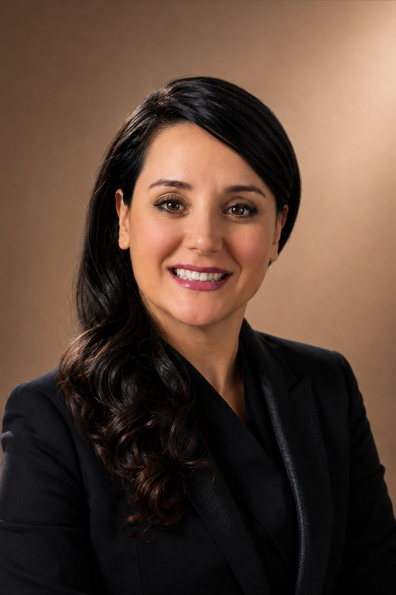
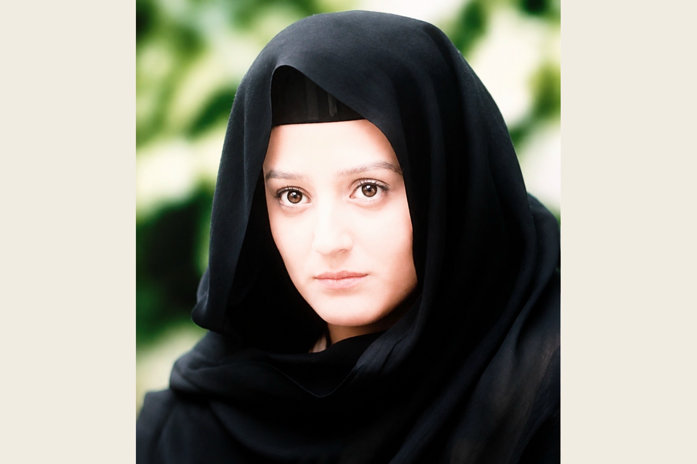

Iranian Actress
Mina Lakani
Official Actress Website
An Artistic Journey Through Stage and Screen
Theatre · Film · Television
A cinematic record of a professional acting career shaped by theatre, film, television, and artistic perseverance.

The Journey
Acting found her through a moment of destiny.
Mina Lakani entered the world of theatre on her eighteenth birthday, at the beginning of her nineteenth year, when an unexpected invitation led her to rehearsals for Shakespeare’s Hamlet. That first encounter began a professional career spanning stage, cinema, and television.
Continue the journey →Cinema
Television
Credits
Acting work across theatre, film, television, and screen projects.
A concise record of confirmed stage and screen credits from Mina Lakani's professional career.
Theatre
- HamletProfessional Stage Debut · Directed by Ghotbeddin Sadeghi
- The SeagullStage Production
- StripteaseComedy Stage Production · Directed by Farzan Deljou · California performances included Wilshire Ebell Theatre, Los Angeles, and Foothill College, Los Altos
Cinema
- Remember the FlightFeature Film · Directed by Hamid Rakhshani
- Day of the AngelFereshteh / Angel · Feature Film · Directed by Behrouz Afkhami
- The VisitJanet · Lead Role · Feature Film · Directed by Mohammad Reza HonarmandCrystal Simorgh for Best Actress in a Leading Role · 13th Fajr Film Festival (1995)
- The Eastern WomanFeature Film · Directed by Rambod Lotfi
- Die HardFeature Film · Directed by Ali Akbar Saghafi
Television
- Mr. Fabrizi's BusinessTelevised Theatre · Directed by Mohammad Reza Khaki and Masoud Foroutan
- Under the BazaarTelevision Miniseries · Directed by Reza Zhian
- In the Lion's SkinTelevised Theatre · Directed by Shohreh Lorestani
- ParimahTelevision Film · Directed by Masoud Abparvar
- Land of DreamsTelevision Series · Directed by Masoud Rashidi and Hamid Ghadakchian
- Fellow TravelersTelevision Series · Directed by Ali Zhekan and Mohsen Mohseni-Nasab
- Days of ProtestTelevision Series · Directed by Hossein Soheili-Zadeh
- The Last SinRoya Akrami · Television Series · Directed by Hossein Soheili-Zadeh
- HastiLead Role · Television Film · Directed by Mahmoud Moazami · Produced by Mohsen Badrlou
- Tell Me This Is Not a DreamTelevision Film · Directed by Mehdi Golestaneh
- Motherhood SongSamira · Television Series · Directed by Hossein Soheili-Zadeh
- TavanMarjan Amini · Television Series · Directed by Shahram Shah-Hosseini
Screen & Video
- JonoonDramatic music video about drug addiction · Featuring Mina Lakani and Farhad Jam · Directed by Shahrokh Delko · Screened in cinemas before feature filmsکلیپ نمایشی دربارهٔ پیامدهای اعتیاد، با بازی مینا لاکانی و فرهاد جم، به کارگردانی شاهرخ دلکو؛ نمایشدادهشده در سینماها پیش از فیلمهای بلند.
This credits record is based on confirmed acting work and can be expanded as additional documentation is reviewed.
Selected Works & Archives
The Visual Archive
A photographic record of Day of the Angel (1994), preserving moments from the production through surviving archival images.

Film Gallery
Day of the Angel روز فرشته
A photographic archive preserving moments from Mina Lakani’s performance as Fereshteh.
Open Photo Gallery →